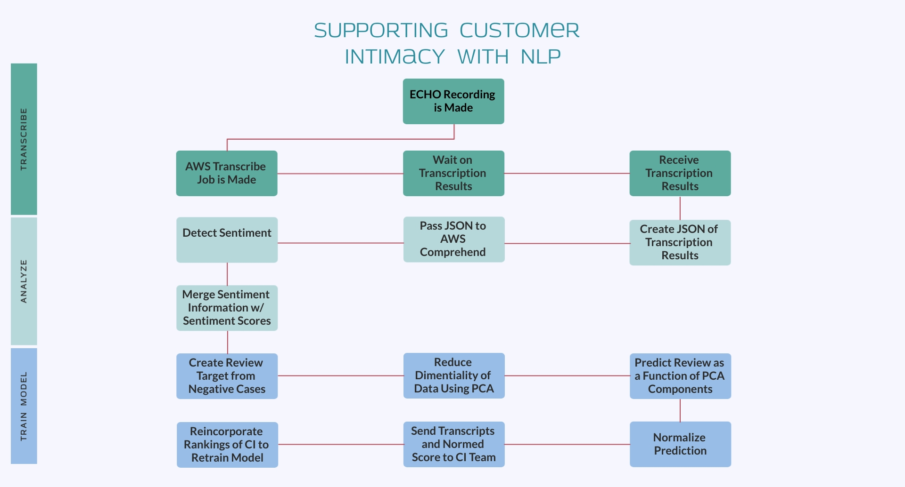

Fern Rees (she/her/hers)
Data Scientist, Transformational Analyitics

from __future__ import print_function
import time
import boto3
transcribe = boto3.client('transcribe')
job_name = "job name"
job_uri = "https://S3 endpoint/test-transcribe/answer2.wav"
transcribe.start_transcription_job(
TranscriptionJobName=job_name,
Media={'MediaFileUri': job_uri},
MediaFormat='wav',
LanguageCode='en-US'
)
while True:
status = transcribe.get_transcription_job(TranscriptionJobName=job_name)
if status['TranscriptionJob']['TranscriptionJobStatus'] in ['COMPLETED', 'FAILED']:
break
print("Not ready yet...")
time.sleep(5)
print(status)
{
"jobName":"job ID",
"accountId":"account ID",
"results": {
"transcripts":[
{
"transcript":" that's no answer"
}
]
}}
serviceName = "comprehend"
regionName = "us-east-1"
#establish client, send text
client_comprehend=boto3.client(service_name=serviceName, region_name=regionName)
sentifment_results = {}
for key in json_transcrips.keys():
txt=json_transcripts.get(key)
if len(txt) !=0:
sentiment_results[key]=client_comprehend.detect_sentiment(
Text=json_transcripts.get(key),
LanguageCode= 'en'
)
file_names=sentiment_results.keys()
overall_sentiment=list(map(lambda k: sentiment_results.get(k).get('Sentment'),
file_names))
sentiment_trans = list(map(lambda k: json_transcripts.get(k),
sentiment_results.keys()))
sentiment_scores=pd.DataFrame(
list(map(lambda k: sentiment_results.get(k).get('SentimentScore'),
sentiment_results.keys())),
)
sentiment_scores.index=sentiment_results.keys()
sentiment_df=pd.DataFrame([overall_sentiment, sentiment_trans], columns=file_namess).T
sentiment_df=(sentiment_scores.join(sentiment_df)
.rename(columns={0:"Sentiment",1:"TranscribedTest""}))
## jobname mixed negative neutral positive sentiment text
## 1 Case1 0.004 0.8 0.004 0.002 NEGATIVE Very bad experience
## 2 Case2 0.009 0.002 0.9 0.004 NEURTRAL Eh
## 3 Case3 0.002 0.004 0.002 0.7 POSITIVE It was great
nComponents = 3
pca_tx = SparsePCA(n_components=nComponents, random_state=0)
pca_tx.fit(df_data)
ftrs_transformed=pca_tx.transform(df_data)
ftrs_transformed
lr_model = LogisticRegression(random_state=0, solver='liblinear').fit(fit_data.iloc[:,1:], fit_data.iloc[:,0])
pred_class = lr_model.predict(fit_data.iloc[:,1:])
pred_prob = lr_model.predict_proba(fit_data.iloc[:,1:])
pred_score = lr_model.decision_function(fit_data.iloc[:,1:])
norm_pred_score = (pred_score-min(pred_score))/(max(pred_score)-min(predscore))
Fernfrees@cdphp.com